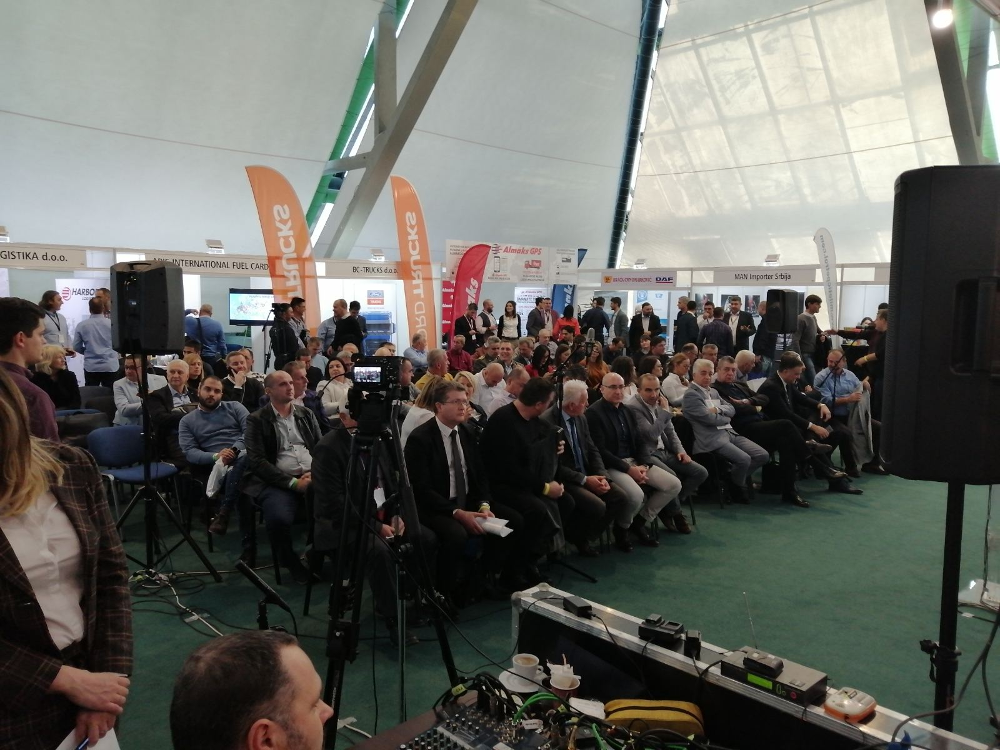
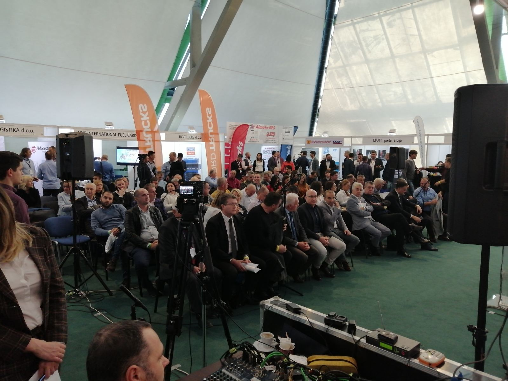

11/2020
ПОДРШКА ПРОГРАМА ДЕВЕЛОППП РИХТЕР ТРАНСПОРТ У ПРЕВЕНЦИЈИ ЕПИДЕМИЈЕ КОВИД-19
У оквиру посебне хуманитарне активности програма ДевелоППП Рихтер Транспорт у превенцији епидемије Ковид-19, донирано је 1500 заштитних маски клубу пензионера београдске општине Врачар. Акцију је подржала и сама општина Врачар, са циљем подршке најстаријим суграђанима у заштити здравља током пандемије Ковид-19, која је значајно утицала на живот и рад целе заједнице, а тиме и на активности али и улогу програма ДевелоППП Рихтер Транспорт.


У оквиру посебне хуманитарне активности програма ДевелоППП Рихтер Транспорт у превенцији епидемије Ковид-19, донирано је 1500 заштитних маски Заједници саобраћајних школа, недобитном удружењу основаном ради остваривања циљева у области средњег стручног образовања и васпитања и образовања одраслих у подручју рада саобраћај. Овом донацијом коју је примио председник Заједнице г.Мирослав Мацура, у заштити здравља током пандемије Ковид-19 подржани су ученици и наставници саобраћајних школа чланица Заједнице саобраћајних школа.


14/06/2020
ПРОГРАМ ДЕВЕЛОППП РИХТЕР ТРАНСПОРТ У МЕДИЈИМА
Активности програма ДевелоППП Рихтер Транспорт и у оквиру њега основаног тренинг центра у Београду - Центар за обуку Рихтер транспорт, пропраћени су у домаћим медијима из области транспорта.
Крајем прошле године, у току почетне фазе пројекта и формирања Центра за обуку Рихтер транспорт у Београду, програм је представљен у специјализованом часопису за теретна и грађевинска возила Велики точкови. Чланак можете погледати овде.

У току ове године активности Центра за обуку Рихтер транспорт представљене су у више наврата и у специјализованом онлајн часопису за теретна и грађевинска возила kamioni.net

Програм ДевелоППП Рихтер Транспорт представљен је и у специјализованом издању Пословног удружења мећународни транспорт, званичног сарадника пројекта у Србији Програма ДевелоППП Рихтер Транспорт.


06/05/2020
ПРИЛАГОЂАВАЊЕ ПРОГРАМА УСЛОВИМА У ТОКУ ЕПИДЕМИЈЕ KОВИД-19
У Центру за Обуку – Тренинг Центар Рихтер Транспорт, после одржаних првих тренинга на основу смерница пројекта креираног у оквиру програма ДевелоППП успостављеног од стране Секва – непрофитне развојне организације из Немачке и немачког транспортног предузећа Рихтер Транспорт, ради се на реорганизацији планираног програма тренинга у периоду од маја до јула. Услед последица избијања епидемије болести Ковид-19 и онемогућености организовања класичних предавања, тренинга и презентација уз присуство полазника, стандардне форме тренинга биће привремено замењене онлајн презентацијама и предавањима, које су у процесу осмишљавања и припреме. Како се ради о специфичним предавањима са стручном тематиком и знатним нагласком на практичном тренингу, онлајн презентације и предавања биће прилагођена теоретском делу наставног плана.
У очекивању скоре нормализације услова у вези са епидемијом болести Ковид-19, на овај начин ће се у наредном периоду осигурати активност Центра за Обуку – Тренинг центар Рихтер Транспорт, на активностима организације тренинга и презентација. Досадашњи тренинзи одржани су по посебно креираном наставном плану у оквиру којег се на курсевима намењеним возачима камиона предавала тематика Измењивог система транспорта. Информације у вези са тренинзима по овој тематици и плановима за наредни период, као и о пројекту ДевелоППП у оквиру којег је овај тренинг центар и основан, налазе се на интернет страни Центра за Обуку www.centarzaobuku.com
03/02/2020
ОДРЖАНИ ПРВИ ТРЕНИНЗИ У ТРЕНИНГ ЦЕНТРУ РИЦХТЕР ТРАНСПОРТ
У Центру за Обуку – Тренинг Центар Рихтер Транспорт одржани су први пилот тренинзи на основу смерница пројекта креираног у оквиру програма ДевелоППП успостављеног од стране Немачког министарства за развој и привредну сарадњу - БМЗ и Секва – непрофитне развојне организације из Немачке, а чији је носилац немачко транспортно предузеће Рихтер Транспорт.
Пилот тренинзи одржани су по посебно креираном наставном плану у оквиру којег ће се на курсевима намењеним возачима камиона предавати тематика Свап систем - Измењиви систем транспорта, уз следеће области:
- Технологија измењивог камионског система транспорта / Свап систем – теоријска обука и практично савладавање вештина вожње и маневрисања, уз све специфичности свап система.
- Безбедност у вожњи Свап система и принципи безбедног превоза робе.
- Принципи комбинованих возила, ваздушне кочнице и процедура прегледа возила са специфичностима за возила Свап система измењивог транспорта.
У току фебруара и марта месеца успоставиће се редован распоред тренинга по наставном плану Свап систем / Измењиви систем транспорта, који ће у првом распореду трајати до јула месеца. Тренинзи су предвиђени да се одвијају у просторијама Центра за Обуку – Тренинг Центар Рихтер Транспорт у Баричу, као и код заинтересованих друмских транспортних предузећа за интерне групне тренинге запослених. Тренинг центар је основан крајем прошле године и намењен је пре свега за обуку возача камиона, али и полазника из осталих сродних делатности. Центар садржи просторије за одржавање наставе, презентација и догађаја из области друмског транспорта робе и спољашњи простор за одржавање практичне наставе у возилу. Информације у вези са тренинзима по овој тематици и плановима за наредни период, као и о пројекту ДевелоППП у оквиру којег је овај тренинг центар и основан, налазе се на страни Центра за Обуку www.centarzaobuku.com
Наведени пројекат креиран је у оквиру програма ДевелоППП успостављеног од стране Немачког министарства за развој и привредну сарадњу - БМЗ и Секва – непрофитне развојне организације из Немачке, а носилац пројекта је немачко транспортно предузеће Рихтер Транспорт. Званични сарадник пројекта у Србији је и Пословно удружење Међународни транспорт.
10/01/2020
ОСНОВАН ЦЕНТАР ЗА ОБУКУ - ТРЕНИНГ ЦЕНТАР РИХТЕР ТРАНСПОРТ
У Баричу поред Београда основан је Центар за Обуку – Тренинг Центар Рихтер Транспорт, намењен пре свега за обуку возача камиона, али и полазника из осталих сродних делатности. Једна од главних области тренинга у оквиру Центра за Обуку биће обука из области технологије измењивог камионског система транспорта / Свап систем. Центар садржи просторије за одржавање наставе, презентација и догађаја из области друмског транспорта робе и спољашњи простор за одржавање практичне наставе у возилу. За потребе наставе Тренинг Центра Рихтер Транспорт, креиран је посебно дизајниран наставни план у оквиру којег ће се на курсевима намењеним возачима камиона предавати тематика нове технологије у Србији – Свап систем / Измењиви систем транспорта, уз следећу области:
- Технологија измењивог камионског система транспорта / Свап систем – теоријска обука и практично савладавање вештина вожње и маневрисања, уз све специфичности свап система.
- Безбедност у вожњи Свап система и принципи безбедног превоза робе.
- Принципи комбинованих возила.
- Ваздушне кочнице и специфичности у вези са Свап системима.
- Преглед возила, са специфичностима возила Свап система измењивог транспорта.
Успостављање овог тренинг центра чија је визија да постане централни тренинг центар за технологију измењивог камионског система транспорта у земљи, али и региону, базира се на једном од циљева овог ДевелоППП пројекта, да се унапреде капацитети професионалне наставе у транспорту робе у друмском саобраћају у Србији, уз сарадњу предавача из ове области из Србије и Немачке и размену искустава из праксе.
Посебан аспект пројекта је и повећање капацитета и знања у сектору транспорта робе у Србији кроз побољшање и додатни развој вокационог тренинга.
Наведени пројекат креиран је иначе у оквиру програма ДевелоППП успостављеног од стране Немачког министарства за развој и привредну сарадњу - БМЗ и Секва – непрофитне развојне организације из Немачке, а носилац пројекта је немачко транспортно предузеће Рихтер Транспорт. Званични сарадник пројекта у Србији је и Пословно удружење Међународни транспорт.

15/12/2019
Годишња скупштина пословног удружења "међународни транспорт"
У петак, 13.12.2019. године одржана је XIX Годишња Скупштина Пословног удружења "Међународни Транспорт" и 16. по реду манифестација Трак Бизнис Феир. Поново се на једном месту окупио велики број учесника сектора транспорта из земље и региона, најзначајнији комерцијални партнери, као и представници јавног сектора. Наш тим је представљајући ДевелоППП пројекат Рихтер Транспорт активно учествовао на овогодишњој традиционалној манифестацији, која се показала као релевантан скуп за промоцију оваквог пројекта који предвиђа креирање тренинг центра у Београду, разраду његовог наставног плана и одржавање радионица из области системског транспорта и утицаја ноћне вожње.

 



10/12/2019
Студијска Посета Рихтер Транспорту У Везелу, Немачка
У првој седмици децембра одржана је студијска посета компанији Рихтер Транспорт у Везелу у Немачкој. Упознавање са њиховим техничким и пословним капацитетима и размена искустава у едукацији професионалних возача. Посебан део студијске посете Рихтер Транспорту представљала је презентација технологије Свап транспортног система. Одржан је и званичан састанак са локалним удружењем транспортних предузећа VVWL на тему ДевелоППП пројекта и потенцијалне сарадње. Додатни део студијске посете представљала је и посета локалним транспортним предузећима, као и возачкој академији Шлиске која активно учествује у развоју тренинга професионалних возача камиона и возила свап транспортних система. На поменутој академији Шлиске одржана је и радионица на тему развоја наставног плана у Србији, а која је предвиђена у оквиру овог ДевелоППП пројекта.


20/10/2019
Презентација Рихтер Транспорт Девелоппп Пројекта И Дискусија
У оквиру програма ДевелоППП успостављеног од стране Немачког министарства за развој и привредну сарадњу - БМЗ и Секва – непрофитне развојне организације из Немачке, одржана је панел презентација и дискусија са циљем званичног представљања ДевелоППП пројекта оснивања тренинг центра за транспорт робе у друмском сабраћају у Србији. Носилац пројекта је немачко транспортно предузеће Рихтер Транспорт са својим тренинг центром у граду Везел у покрајини Северна Рајна Вестфалија. Рихтер Транспорт са својим немачким пројектним конзорцијумом у оквиру пројекта успоставља тренинг центар за транспорт робе у друмском сабраћају, уз увођење решења немачких стандарда системског транспорта и повећање капацитета и знања у сектору транспорта робе у Србији кроз побољшање и додатни развој вокационог тренинга. Циљ овог пројекта је унапређење капацитета професионалне наставе у транспорту робе у друмском саобраћају у Србији, уз сарадњу предавача из ове области из Србије и Немачке и размену искустава из праксе. Пројекат траје годину дана и у предвиђа креирање новог тренинг центра у Београду, разраду његовог наставног плана, одржавање радионица из области системског транспорта и утицаја ноћне вожње, организацију студијских путовања, успостављање пилот тренинга и утицај на стручну наставу у смислу побољшања квалитета кроз позитивне примере из праксе. Званични сарадник пројекта у Србији је и Пословно удружење Међународни транспорт.


12/09/2019
ОСНОВАН ПРОГРАМ ДЕВЕЛОППП РИЦХТЕР ТРАНСПОРТ
У оквиру програма ДевелоППП успостављеног од стране Немачког министарства за развој и привредну сарадњу - БМЗ и Секва – непрофитне развојне организације из Немачке, креиран је пројекат оснивања тренинг центра за транспорт робе у друмском сабраћају у Србији. Носилац пројекта је немачко транспортно предузеће Рихтер Транспорт са својим тренинг центром у граду Везел у покрајини Северна Рајна Вестфалија.
Рихтер Транспорт са својим немачким пројектним конзорцијумом у оквиру пројекта успоставља тренинг центар за транспорт робе у друмском сабраћају, уз увођење решења немачких стандарда системског транспорта и повећање капацитета и знања у сектору транспорта робе у Србији кроз побољшање и додатни развој вокационог тренинга.
Циљ овог пројекта је унапређење капацитета професионалне наставе у транспорту робе у друмском саобраћају у Србији, уз сарадњу предавача из ове области из Србије и Немачке и размену искустава из праксе.
Пројекат траје годину дана и предвиђа креирање новог тренинг центра у Београду, разраду његовог наставног плана, одржавање радионица из области системског транспорта и утицаја ноћне вожње, организацију студијских путовања, успостављање пилот тренинга и утицај на стручну наставу у смислу побољшања квалитета кроз позитивне примере из праксе. Званични сарадник пројекта у Србији је и Пословно удружење Међународни транспорт.